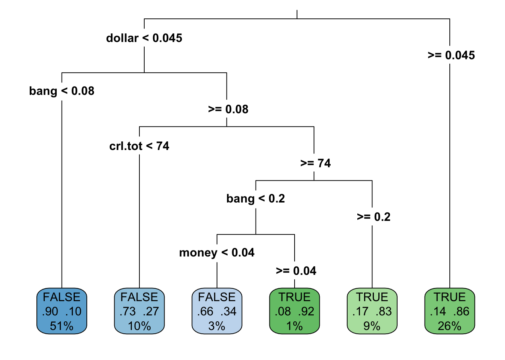
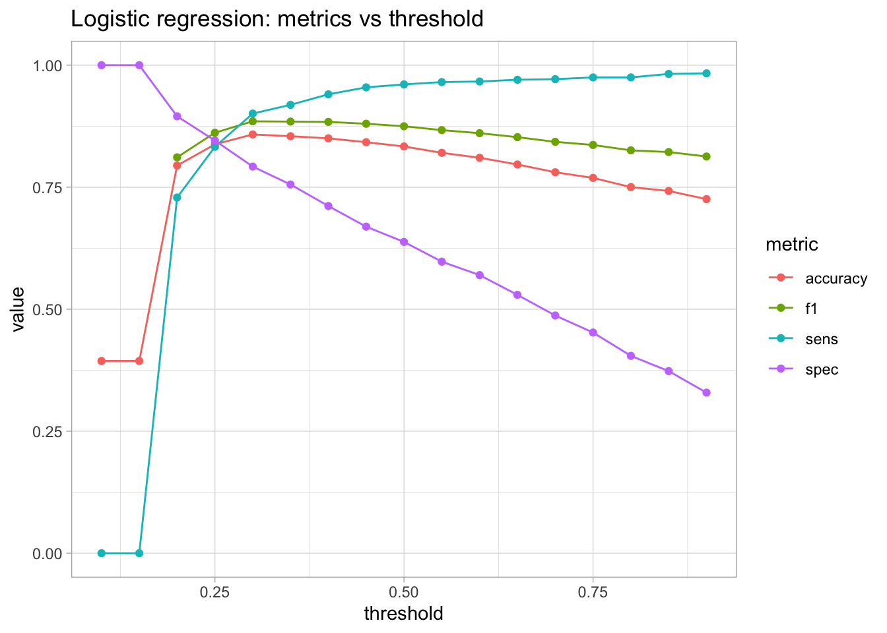

library(tidyverse)
# modelling
library(rpart)
library(rpart.plot)
# evaluation
library(yardstick)
library(broom)Spam detection (Supervised)
Logistic regression + decision trees: classification & interpretation
Goal of this section
Here we treat spam detection as a supervised classification problem:
- we have features extracted from emails (predictors)
- we have a label (spam / not spam)
- we train a model on a training set
- we evaluate on a test set (data the model did not see)
We focus on interpretation as much as on prediction:
- What does a coefficient mean in logistic regression?
- How do decision trees make decisions?
- What does a confusion matrix actually tell us?
- Why accuracy alone can be misleading?
Dataset
- Dataset:
spam.txt
Download dataset
Assumption used below: - last column is the label (TRUE / FALSE) - all other columns are numeric predictors
Setup
Load data
spam_raw <- read_csv2("../assets/data/spam_detection_data.csv", col_names = TRUE)
spam <- spam_raw %>%
mutate(
row_id = row_number(),
label = as.factor(yesno)
) %>%
select(-yesno)
# sanity checks (nepřeskakuj!)
stopifnot("label" %in% names(spam))
nlevels(spam$label)[1] 2table(spam$label)
FALSE TRUE
2788 1813 glimpse(spam_raw)Rows: 4,601
Columns: 7
$ crl.tot <dbl> 278, 1028, 2259, 191, 191, 54, 112, 49, 1257, 749, 21, 184, 26…
$ dollar <dbl> 0.000, 0.180, 0.184, 0.000, 0.000, 0.000, 0.054, 0.000, 0.203,…
$ bang <dbl> 0.778, 0.372, 0.276, 0.137, 0.135, 0.000, 0.164, 0.000, 0.181,…
$ money <dbl> 0.00, 0.43, 0.06, 0.00, 0.00, 0.00, 0.00, 0.00, 0.15, 0.00, 0.…
$ n000 <dbl> 0.00, 0.43, 1.16, 0.00, 0.00, 0.00, 0.00, 0.00, 0.00, 0.19, 0.…
$ make <dbl> 0.00, 0.21, 0.06, 0.00, 0.00, 0.00, 0.00, 0.00, 0.15, 0.06, 0.…
$ yesno <lgl> TRUE, TRUE, TRUE, TRUE, TRUE, TRUE, TRUE, TRUE, TRUE, TRUE, TR…summary(spam_raw[, 1:6]) crl.tot dollar bang money
Min. : 1.0 Min. :0.00000 Min. : 0.0000 Min. : 0.00000
1st Qu.: 35.0 1st Qu.:0.00000 1st Qu.: 0.0000 1st Qu.: 0.00000
Median : 95.0 Median :0.00000 Median : 0.0000 Median : 0.00000
Mean : 283.3 Mean :0.07581 Mean : 0.2691 Mean : 0.09427
3rd Qu.: 266.0 3rd Qu.:0.05200 3rd Qu.: 0.3150 3rd Qu.: 0.00000
Max. :15841.0 Max. :6.00300 Max. :32.4780 Max. :12.50000
n000 make
Min. :0.0000 Min. :0.0000
1st Qu.:0.0000 1st Qu.:0.0000
Median :0.0000 Median :0.0000
Mean :0.1016 Mean :0.1046
3rd Qu.:0.0000 3rd Qu.:0.0000
Max. :5.4500 Max. :4.5400 Create a clean data frame with a factor label.
spam <- spam_raw %>%
rename(label = !!sym(names(spam_raw)[ncol(spam_raw)])) %>%
mutate(label = factor(label)) %>%
# ensure numeric predictors
mutate(across(-label, as.numeric))
table(spam$label)
FALSE TRUE
2788 1813 Train / test split
We use a stratified split to make sure both classes (spam / not spam) are present in the training set. This prevents rare edge cases where a random split accidentally puts almost all positives into test (or train), which can break some models (notably rpart probability predictions).
set.seed(1)
train_frac <- 0.7
idx_train <- spam %>%
mutate(i = row_number()) %>%
group_by(label) %>%
slice_sample(prop = train_frac) %>%
ungroup() %>%
pull(i)
train <- spam[idx_train, ]
test <- spam[-idx_train, ]
nrow(train); nrow(test)[1] 3220[1] 1381table(train$label)
FALSE TRUE
1951 1269 table(test$label)
FALSE TRUE
837 544 Baseline (always predict the majority class)
majority_class <- names(sort(table(train$label), decreasing = TRUE))[1]
majority_class[1] "FALSE"majority_class <- names(sort(table(train$label), decreasing = TRUE))[1]
baseline_pred <- factor(rep(majority_class, nrow(test)), levels = levels(train$label))
yardstick::accuracy_vec(truth = test$label, estimate = baseline_pred)[1] 0.6060825baseline_tbl <- tibble(truth = test$label, estimate = baseline_pred)
yardstick::conf_mat(baseline_tbl, truth, estimate) Truth
Prediction FALSE TRUE
FALSE 837 544
TRUE 0 0
Why we start with a baseline
If your “fancy model” cannot beat the baseline, something is wrong: - data leakage, coding mistake, or - the features contain little signal.
Model 1: Logistic regression
Fit
We use a standard logistic regression (glm(..., family = binomial)). This model estimates:
- log-odds of the positive class as a linear function of predictors
- which can be converted to predicted probabilities
fit_glm <- glm(label ~ ., data = train, family = binomial)
summary(fit_glm)
Call:
glm(formula = label ~ ., family = binomial, data = train)
Coefficients:
Estimate Std. Error z value Pr(>|z|)
(Intercept) -1.7205779 0.0641856 -26.806 < 2e-16 ***
crl.tot 0.0006208 0.0001052 5.900 3.63e-09 ***
dollar 7.3072183 0.6943850 10.523 < 2e-16 ***
bang 1.8186031 0.1420155 12.806 < 2e-16 ***
money 1.6839200 0.2486902 6.771 1.28e-11 ***
n000 4.3535988 0.5286480 8.235 < 2e-16 ***
make 0.0979699 0.1681181 0.583 0.56
---
Signif. codes: 0 '***' 0.001 '**' 0.01 '*' 0.05 '.' 0.1 ' ' 1
(Dispersion parameter for binomial family taken to be 1)
Null deviance: 4318.3 on 3219 degrees of freedom
Residual deviance: 2815.9 on 3213 degrees of freedom
AIC: 2829.9
Number of Fisher Scoring iterations: 7Predicted probabilities and class prediction
p_glm <- predict(fit_glm, newdata = test, type = "response")
head(p_glm) 1 2 3 4 5 6
0.9714233 0.1557552 0.7576123 0.2958069 0.4677656 0.6551723 Choose a decision threshold (default: 0.5).
threshold <- 0.5
pred_glm <- ifelse(p_glm >= threshold, levels(train$label)[2], levels(train$label)[1])
pred_glm <- factor(pred_glm, levels = levels(train$label))Evaluation
glm_tbl <- tibble(truth = test$label, estimate = pred_glm)
yardstick::conf_mat(glm_tbl, truth, estimate) Truth
Prediction FALSE TRUE
FALSE 804 197
TRUE 33 347yardstick::accuracy_vec(truth = test$label, estimate = pred_glm)[1] 0.833454yardstick::sens_vec(truth = test$label, estimate = pred_glm) # sensitivity / recall[1] 0.9605735yardstick::spec_vec(truth = test$label, estimate = pred_glm) # specificity[1] 0.6378676yardstick::f_meas_vec(truth = test$label, estimate = pred_glm) # F1 score[1] 0.874864Interpretation: coefficients
A coefficient tells you how the predictor changes the log-odds of the positive class while holding other predictors constant.
To make this more intuitive, we can also look at odds ratios.
coef_table <- broom::tidy(fit_glm) %>%
mutate(odds_ratio = exp(estimate)) %>%
arrange(desc(abs(estimate)))
coef_table %>%
select(term, estimate, std.error, statistic, p.value, odds_ratio) %>%
print(n = 15)# A tibble: 7 × 6
term estimate std.error statistic p.value odds_ratio
<chr> <dbl> <dbl> <dbl> <dbl> <dbl>
1 dollar 7.31 0.694 10.5 6.75e- 26 1491.
2 n000 4.35 0.529 8.24 1.79e- 16 77.8
3 bang 1.82 0.142 12.8 1.52e- 37 6.16
4 (Intercept) -1.72 0.0642 -26.8 2.73e-158 0.179
5 money 1.68 0.249 6.77 1.28e- 11 5.39
6 make 0.0980 0.168 0.583 5.60e- 1 1.10
7 crl.tot 0.000621 0.000105 5.90 3.63e- 9 1.00
Practical reading tip
odds_ratio > 1increases odds of the positive classodds_ratio < 1decreases odds
But: odds ratios are not probability changes, and correlated predictors can distort interpretation.
Model 2: Decision tree
Fit
fit_tree <- rpart(label ~ ., data = train, method = "class")
fit_treen= 3220
node), split, n, loss, yval, (yprob)
* denotes terminal node
1) root 3220 1269 FALSE (0.60590062 0.39409938)
2) dollar< 0.0445 2379 544 FALSE (0.77133249 0.22866751)
4) bang< 0.0795 1643 165 FALSE (0.89957395 0.10042605) *
5) bang>=0.0795 736 357 TRUE (0.48505435 0.51494565)
10) crl.tot< 73.5 329 90 FALSE (0.72644377 0.27355623) *
11) crl.tot>=73.5 407 118 TRUE (0.28992629 0.71007371)
22) bang< 0.1985 132 60 FALSE (0.54545455 0.45454545)
44) money< 0.04 106 36 FALSE (0.66037736 0.33962264) *
45) money>=0.04 26 2 TRUE (0.07692308 0.92307692) *
23) bang>=0.1985 275 46 TRUE (0.16727273 0.83272727) *
3) dollar>=0.0445 841 116 TRUE (0.13793103 0.86206897) *Plot
rpart.plot(fit_tree, type = 3, extra = 104, fallen.leaves = TRUE)
Interpretation reminder: - follow a path from the root to a leaf - each split is a rule - leaves show class proportions - always check support (how many cases reach a leaf)
Predict and evaluate
In some rpart versions/data combinations, predict(..., type = "prob") can throw an internal error. For teaching purposes, type = "class" is the most robust and is enough for confusion matrices and metrics.
pred_tree <- predict(fit_tree, newdata = test, type = "class")
pred_tree <- factor(pred_tree, levels = levels(train$label))
tree_tbl <- tibble(truth = test$label, estimate = pred_tree)
yardstick::conf_mat(tree_tbl, truth, estimate) Truth
Prediction FALSE TRUE
FALSE 775 136
TRUE 62 408yardstick::accuracy_vec(truth = test$label, estimate = pred_tree)[1] 0.8566256yardstick::f_meas_vec(truth = test$label, estimate = pred_tree)[1] 0.8867277(Optional) If you really want probabilities, try this chunk. If it fails on your system, just skip it.
p_tree <- tryCatch(
predict(fit_tree, newdata = test, type = "prob"),
error = function(e) NULL
)
if (!is.null(p_tree)) {
head(p_tree)
} FALSE TRUE
1 0.1379310 0.8620690
2 0.8995740 0.1004260
3 0.1379310 0.8620690
4 0.7264438 0.2735562
5 0.1672727 0.8327273
6 0.1379310 0.8620690Comparing models
metrics <- tibble(
model = c("Baseline", "Logistic regression", "Decision tree"),
accuracy = c(
yardstick::accuracy_vec(test$label, baseline_pred),
yardstick::accuracy_vec(test$label, pred_glm),
yardstick::accuracy_vec(test$label, pred_tree)
),
f1 = c(
yardstick::f_meas_vec(test$label, baseline_pred),
yardstick::f_meas_vec(test$label, pred_glm),
yardstick::f_meas_vec(test$label, pred_tree)
)
)
metrics# A tibble: 3 × 3
model accuracy f1
<chr> <dbl> <dbl>
1 Baseline 0.606 0.755
2 Logistic regression 0.833 0.875
3 Decision tree 0.857 0.887
Accuracy is not enough
If the classes are imbalanced, a model can have high accuracy while being useless. Always inspect: - confusion matrix - sensitivity/recall (how many positives you catch) - specificity (how many negatives you correctly reject) - F1 score (balance of precision/recall)
Threshold tuning (optional but useful)
The 0.5 threshold is arbitrary. Depending on the cost of mistakes, you might prefer to catch more spam (higher sensitivity) even at the cost of more false positives.
threshold_grid <- seq(0.1, 0.9, by = 0.05)
threshold_results <- map_dfr(threshold_grid, function(t) {
pred <- factor(ifelse(p_glm >= t, levels(train$label)[2], levels(train$label)[1]),
levels = levels(train$label))
tibble(
threshold = t,
accuracy = yardstick::accuracy_vec(test$label, pred),
sens = yardstick::sens_vec(test$label, pred),
spec = yardstick::spec_vec(test$label, pred),
f1 = yardstick::f_meas_vec(test$label, pred)
)
})
threshold_results %>%
pivot_longer(cols = c(accuracy, sens, spec, f1),
names_to = "metric", values_to = "value") %>%
ggplot(aes(threshold, value, color = metric)) +
geom_line() +
geom_point() +
labs(title = "Logistic regression: metrics vs threshold") +
theme_light()
Exercises
Exercise 1: Baseline vs model
- Compute the baseline accuracy (already done above).
- Which model beats it? By how much?
- Write one sentence explaining why baseline matters.
Exercise 2: Interpret one logistic coefficient
Pick one predictor with a large absolute coefficient. - What is its sign? - What does that imply about odds? - Compute and interpret its odds ratio.
Exercise 3: Read a decision-tree rule
Pick one leaf in the tree and write the rule as:
IF … AND … AND … THEN predicted class = … (with probability ≈ …)
Also report how much data reaches that leaf (support).
Exercise 4: Change the threshold
Try thresholds 0.3 and 0.7 for the logistic regression. - Compare confusion matrices. - Which threshold would you prefer if missing spam is costly? - Which if false alarms are costly?
Solutions (brief)
Exercise 2 (solution sketch)
A positive coefficient increases log-odds of the positive class. exp(coef) gives the odds ratio: values above 1 increase odds, below 1 decrease odds. Interpretation is conditional on other predictors and can be distorted by collinearity.
Exercise 3 (solution sketch)
A path from root to leaf is a conjunction of split conditions. The leaf prediction is the majority class in that region; the probability shown is the class proportion within that leaf. Small support means the rule is “sharp” but applies to few cases.